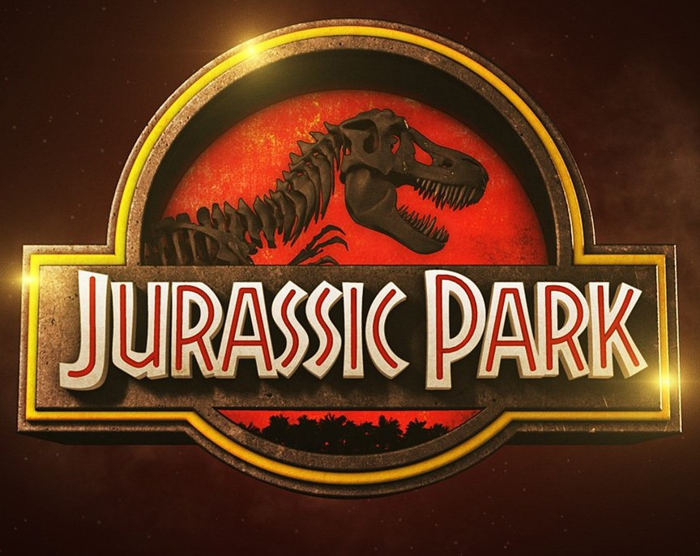
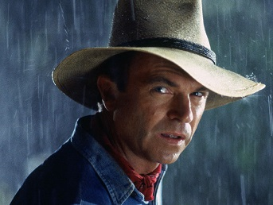
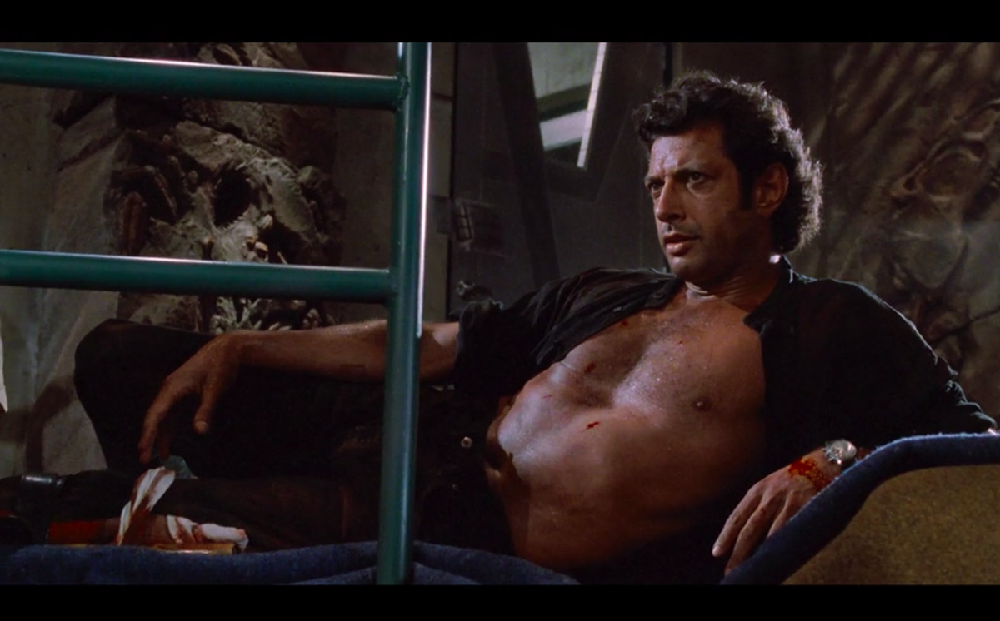
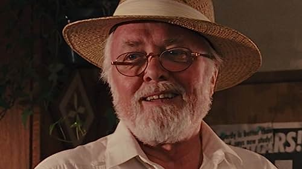
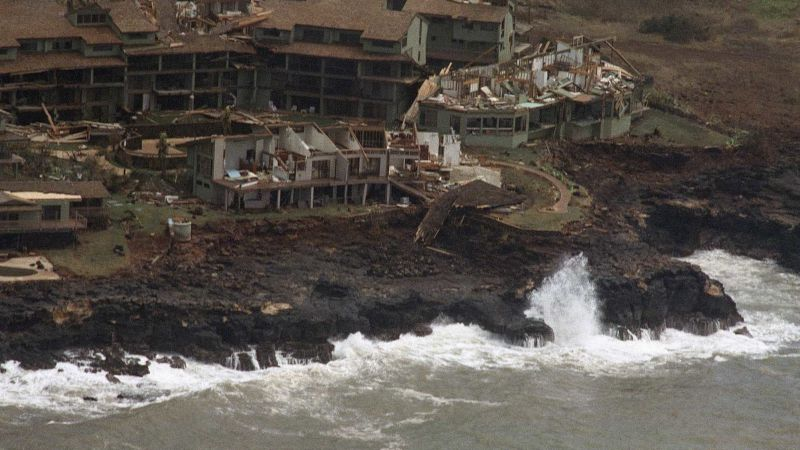
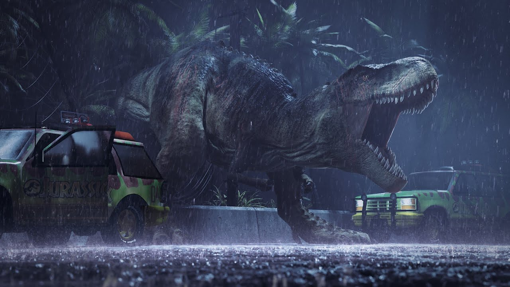
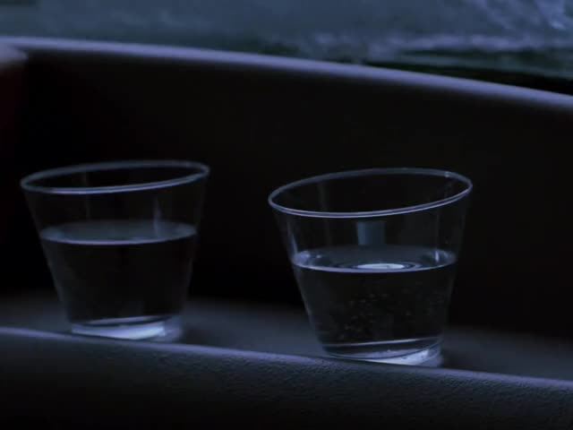
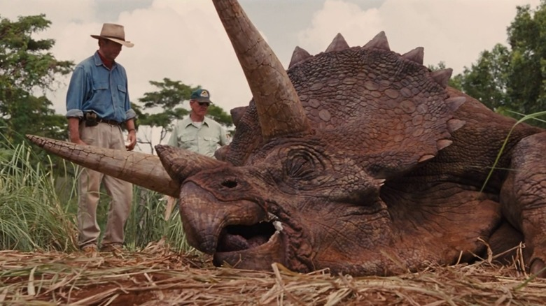
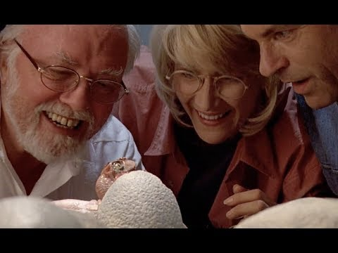

Jurassic Park
This article is about Jurassic Park, one of my favorite movies of all time, interesting facts about the film, including casting choices, box office records it broke, problems during productions, etc.
Overview
Jurassic Park is a 1993 film starring Sam Neill, Laura Dern, Jeff Goldblum, and Richard Attenborough, written by David Koepp, directed by Steven Spielberg. At the time of its release, Jurassic Park became the highest-grossing of all time, until the release of Titanic in 1997. When it was re-released in 2013 for its 20th anniversary, it became the oldest film in history to make more than $1 billion in ticket sales.
Casting
Alan Grant
The character of Alan Grant was based on real-life paleontologist Jack Horner, who was actually involved in coaching Sam Neill, the actor who would eventually be cast to play the character. The role was offered to other actors as well, including William Hurt and Harrison Ford, who both rejected it saying that it wasn't their preferred type of film to be working on.
Ian Malcolm
Interestingly, Ian Malcolm was not present in the original script of the film, the writer David Koepp saying that his character's dialogue in the book was "too wordy", implying that his character was difficult to adapt to the screenplay. Spielberg himself also considered taking the character out of the film, and it was only when he heard Jeff Goldblum's pitch about playing the character that he was convinced to cast him for the role.
John Hammond
Spielberg's thoughts on John Hammond were that he was an eccentric businessman, that he wanted portrayed as the "dark side of Walt Disney." Richard Attenborough, the actor who would eventually play the character, was hesitant at first to play the role, as it had been some time since he had last acted in a film. Later, he accepted the part after being told by Spielberg that he "couldn't see anyone else playing it" but him.
Production Issues
Hurricane Iniki
During production, there was a hurricane that hit the island of Kaua'l in Hawaii, the location that was used to portray Isla Nublar, the setting where most of the movie takes place. Although no one was injured in this natural disaster, the sets were completely destroyed, which forced the crew to have to cut scenes from the movie, including one where the character Ray Arnold, played by Sam Jackson, meets his end at the hands of Velociraptors. Despite this, some crew members were able to endure the hurricane, and obtained footage of it, which can be seen in the final cut of the film when the Jurassic Park employees are trying to evacuate by boat from the island.
Tyrannosaurus Rain
The Tyrannosaurus Rex in the movie was created by using an animatronic robot, and partialy use of CGI. With the animatronic model, the crew sometimes faced issues during rainfall sequences, when the large amount of water weight would throw the model off-balance, forcing the crew to have to dry it off between takes. At times, this water weight issue became so bad that the model began to move on its own, which can be seen in the scene when the T-Rex breaks through the sunroof of the Jeep the two children, Lex and Tim, were in.
Cool Effects
Water Ripple Effect
One of the most famous scenes in the movie, this effect was done by visual effects supervisor Michael Lantieri, by attaching guitar strings to the base of each water cup and plucking the strings at the right times. Interestingly, this iconic moment was inspired in part by the song "September", by Earth, Wind & Fire, which Spielberg was listening to while driving one day, when he happened to notice that his rearview mirror was shaking and vibrating from the noise.
Sick Triceratops
In a scene where the characters are walking through the Park, they come across a sick Triceratops. This scene was done with a fully animatronic model, operated with cables by 8 puppeteers directly underneath the model, and by an additional 4 puppeteers that operated the back of the model. Initially, the model was colored purple, yellow, red, and green for the scene, but the main technician behind the live-action effects, Stan Winston, disapproved, saying "this looks ridiculous, make it brown. "
Raptor Puppets
The scene where a Velociraptor hatchling emerges from a dinosaur egg was originally going to be a baby Triceratops that was operated by a small finger puppet poking out of the egg. This idea was eventually scrapped, and Spielberg decided he wanted it to be a baby Velociraptor crawling out. Initially, the approach was to use wires and strings to control the puppet, until Richard Landon, the mechanical department coordinator on the film said he would design an animatronic that could be used instead. The final model for the baby Velociraptor ended up being an animatronic puppet controlled internally by Landon himself, while the egg was molded by Greg Figiel, an FX artist, who made it using wax and a layer of plastic wrap.